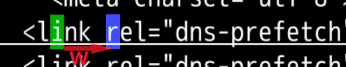
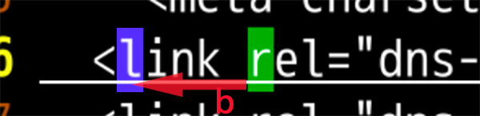
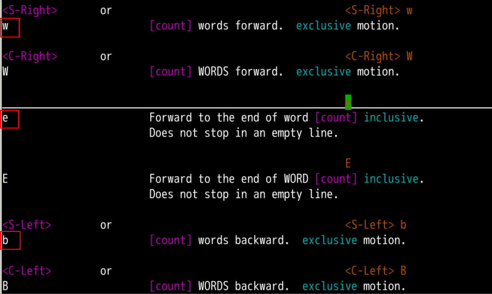
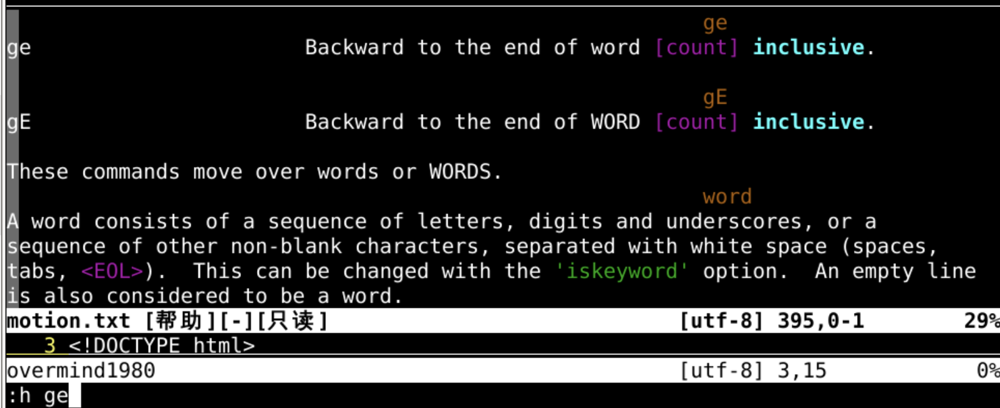
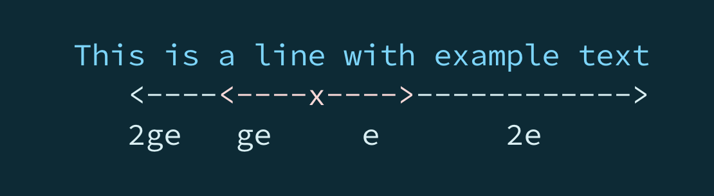

词头词尾
回忆上节课内容🤔
- 我们这次学了向前一个单词
- w
- 意思是
word

- 还学习了向后一个单词
- b
- 意思是
backward

- 这俩命令都落在单词的第一个字母
- 还有什么好玩的命令吗？🤔
动手练习
- 我们可以一路向前
- 也可以反复横跳
- w、b 附近还有什么？🤔
- 去
:h w附近再转悠转悠
查询帮助

- 我们看到 w、b 中间有个 e
- 说是
- Forward to the end of word [count] inclusive.
- Does not stop in an empty line.
- 意思
- 向前到单词的结尾
- 空行不停留
- 直到这个文档的尽头
- 也不停留~~~
- e 对应单词是
end - 我们来试一下🤪
跳到词尾

- 我们可以看到 e 是向
前跳到本词尾 - 而 w 是向
前跳到下词头 - b 则是向
后跳回到上词头 - 如果我的光标不在
本词头的位置，又如何呢？
光标位于词中

- 我们可以看到，如果光标位于
词中时 - e 不变，还是跳到
本词尾 - w 还是跳到
下词头 - 而b 有变化，向
后跳没变，但是跳回到了本词头 - w、b
- 都是跳到
词头 - 一个向
前一个向后
- 都是跳到
- e是向
前跳到词尾 - 如果我想向
后- 跳到上一个词的词尾呢？
向前跳到词尾
- ge
- 向前跳到上一个词的词尾


连续跳跃
wbe比hjkl效率高得多- 但是还可以更高 🤸
- 方法就是使用数字
- 从帮助中，我们可以发现可以选择使用
[count]次数
- 意思就是可以向前 n 个单词
跳起来吧🤾♀️

- 在方向前面加上数字
3b、5e这样都可以
- 甚至
hjkl都可以使用- 比如
4h、10l
- 比如
- 这样快得多！！！✊
总结
- 我们这次学习了 e
- e 代表
end词尾 - 我们了解到在词中时，b退到本词头
- 还可以成倍的跳跃
- 但是当前单词和我的理解有点不一样啊？
- 我想直接跳到href属性，怎么办🤔
- 下次再说 👋